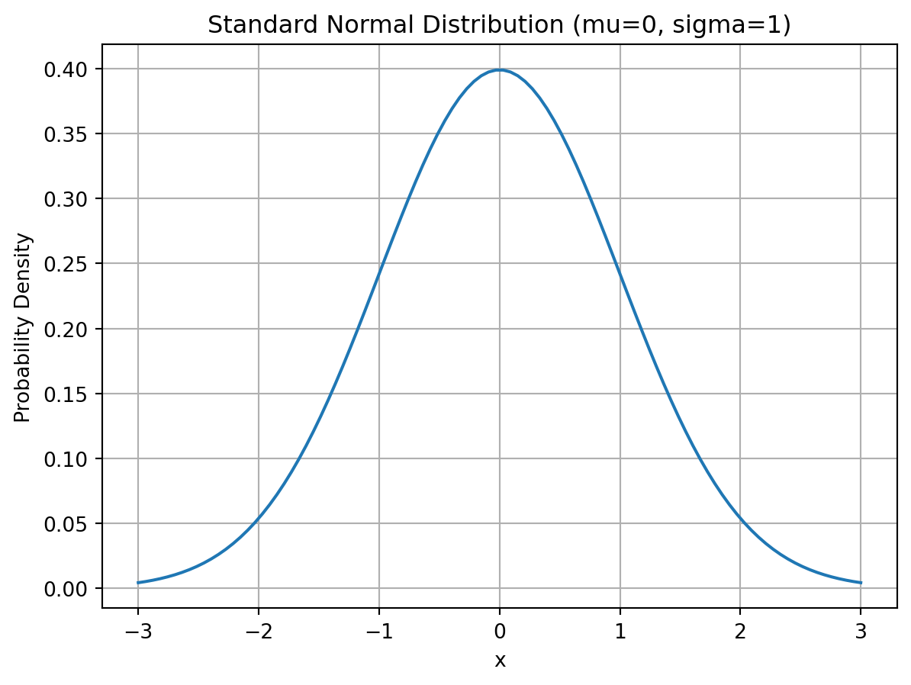

import matplotlib.pyplot as pltimport numpy as npimport scipy.stats as stats# 設定參數mu =0sigma =1x = np.linspace(mu -3*sigma, mu +3*sigma, 100)# 繪製 PDF (機率密度函數)plt.plot(x, stats.norm.pdf(x, mu, sigma))plt.title('Standard Normal Distribution (mu=0, sigma=1)')plt.xlabel('x')plt.ylabel('Probability Density')plt.grid(True)plt.show()

Python 範例：繪製離散機率分佈 (Bernoulli, Binomial, Poisson)
import matplotlib.pyplot as pltimport numpy as npimport scipy.stats as stats# 設定圖表大小 (垂直排列)plt.figure(figsize=(8, 12))# 1. 伯努利分佈 (Bernoulli) - 比較不同 p 值plt.subplot(3, 1, 1)probs = [0.2, 0.5, 0.8]x = np.arange(2)width =0.25for i, p inenumerate(probs): pmf = [1-p, p]# 將長條圖稍微錯開，以便並排顯示 position = x + (i -1) * width plt.bar(position, pmf, width, label=f'p={p}', edgecolor='black', alpha=0.8)plt.xticks(x, ['Failure (0)', 'Success (1)'])plt.title('Bernoulli Distribution (Comparison of p)')plt.ylabel('Probability')plt.legend()# 2. 二項式分佈 (Binomial)plt.subplot(3, 1, 2)n, p =10, 0.5x = np.arange(0, n+1)prob = stats.binom.pmf(x, n, p)plt.bar(x, prob, color='lightgreen', edgecolor='black')plt.title(f'Binomial Distribution (n={n}, p={p})')plt.xlabel('Number of Successes')plt.ylabel('Probability')# 3. 泊松分佈 (Poisson)plt.subplot(3, 1, 3)lam =3x = np.arange(0, 15)prob = stats.poisson.pmf(x, lam)plt.bar(x, prob, color='salmon', edgecolor='black')plt.title(f'Poisson Distribution (**𝝺**={lam})')plt.xlabel('Number of Events')plt.ylabel('Probability')plt.tight_layout()plt.show()
C:\Users\charl\AppData\Local\Temp\ipykernel_46948\3995846626.py:45: UserWarning: Glyph 120698 (\N{MATHEMATICAL SANS-SERIF BOLD SMALL LAMDA}) missing from font(s) DejaVu Sans.
plt.tight_layout()
C:\Users\charl\AppData\Local\Packages\PythonSoftwareFoundation.Python.3.10_qbz5n2kfra8p0\LocalCache\local-packages\Python310\site-packages\IPython\core\pylabtools.py:170: UserWarning: Glyph 120698 (\N{MATHEMATICAL SANS-SERIF BOLD SMALL LAMDA}) missing from font(s) DejaVu Sans.
fig.canvas.print_figure(bytes_io, **kw)